Por que as coisas acontecem? Desde sempre a humanidade fabricou instrumentos e maquinas, o que implica ao menos um conhecimento experimental da causalidade.
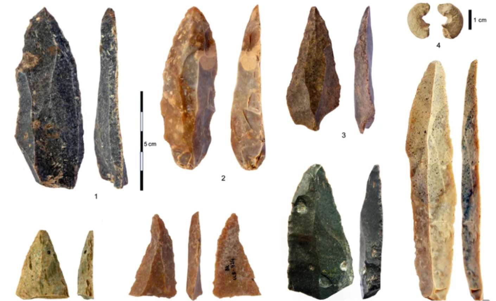
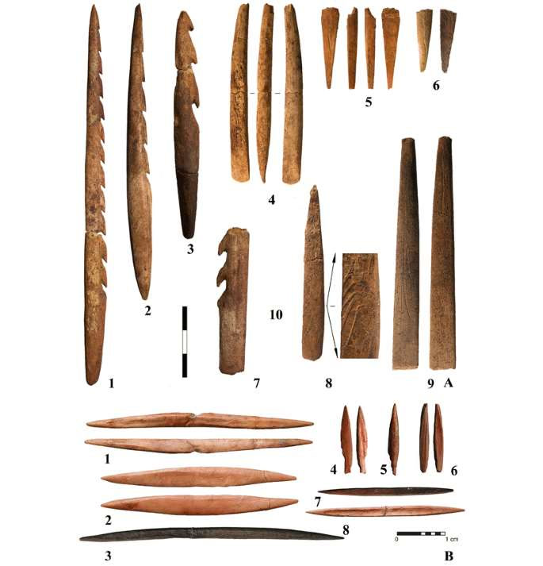
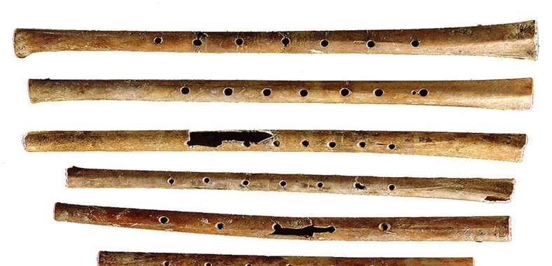
Desde sempre a humanidade fabricou instrumentos e maquinas, o que implica ao menos um conhecimento experimental da causalidade.
Instrumentos de pedra lascada, pontas de osso e flautas pre-historicas demonstram que o ser humano sempre compreendeu, na pratica, a relacao entre causa e efeito.
Os pre-socraticos aludem a diversos tipos de causas, mas sem uma explicacao geral. Platao afirma que "e preciso buscar as causas das coisas: por que chegam a existir, por que deixam de existir, por que existem" (Fedon).
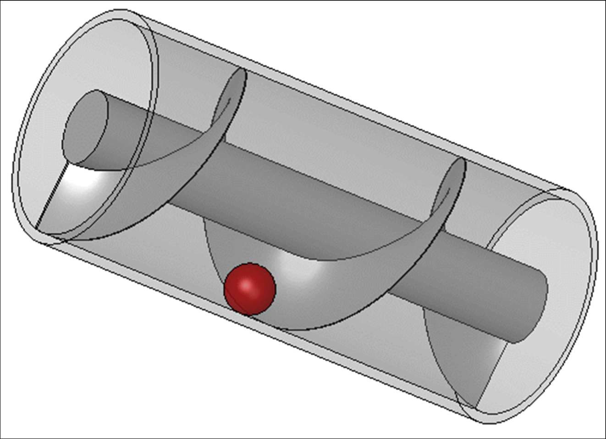
Bomba de irrigacao no Egito, ca. 1952, baseada no principio da espiral de Arquimedes. Esse tipo de maquina ja estava em uso ha mais de 3500 anos.
A fabricacao de maquinas implica conhecimento experimental da causalidade: saber que certos materiais e formas produzem efeitos previsiveis.
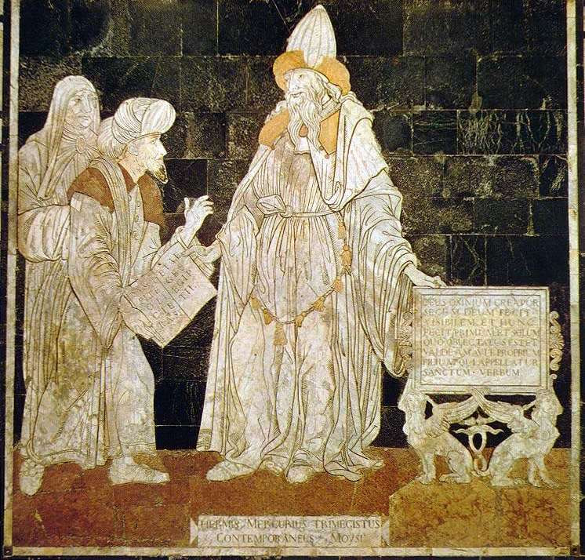
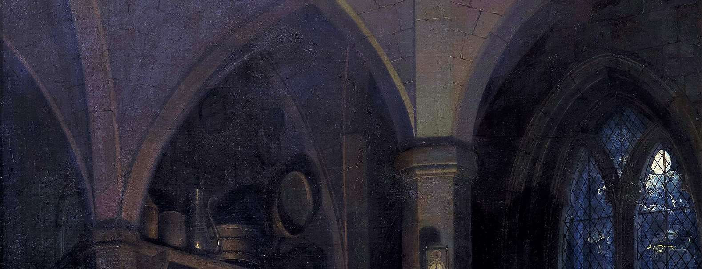
Hermes ou Mercurio Trismegisto, figura mitologica da epoca helenistica associada a origem do hermetismo e da alquimia; ca. 1480, ceramica do piso da catedral de Siena, Italia.
A direita, O alquimista descobre o fosforo, de Joseph Wright of Derby, 1771, Derby Museums and Art Gallery, Derby, Inglaterra.
E preciso buscar as causas das coisas: por que chegam a existir, por que deixam de existir, por que existem.
Platao, Fedon
Causa e o que responde a pergunta "por que?" formulada quer perante um ente, quer uma acao desse ente. Aristoteles propoe quatro respostas a essa pergunta.
Causa material: de que uma coisa e feita? O substrato material que a constitui — como o DNA, o RNA e as proteinas que formam um organismo.
Causa formal: a forma ou estrutura racional da coisa — o que faz com que um cao seja um cao e nao um gato.
Causa eficiente: o que levou esta coisa a uniao entre materia e forma — os pais que geraram o filhote.
Causa final: para que serve esta coisa, ou a sua finalidade — desde a causa final primeira (a sobrevivencia da especie) ate a Causa (final) ultima, Deus.
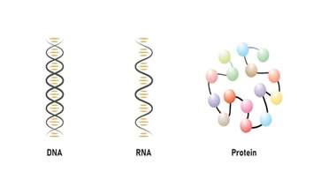
A causa eficiente (os pais) gera o individuo; a causa formal determina que seja um cao; a causa material (DNA, RNA, proteinas) compoe o corpo; e a causa final orienta o ser para seu fim.
As causas levam a atualizacao das potencias presentes na coisa. O argumento da sequencia ato-potencia pode ser formulado tambem com a causalidade, levando ao conhecimento de Deus tanto como Causa Incausada, da qual se originam todas as coisas, como Causa ultima do Universo, para a qual se dirigem todas as coisas por atracao.
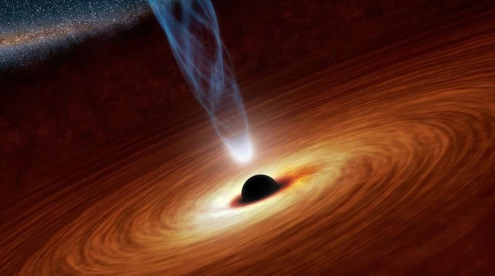
Buraco negro. Credito NASA/JPL-Caltech. Ha uma hierarquia nas causas, que as vincula entre si: a causa final determina como tem de ser a forma, as duas determinam qual deve ser a materia, e a causa agente ou eficiente pode ter a causa final na mente ao agir, ou ser impulsionada pela propria finalidade.
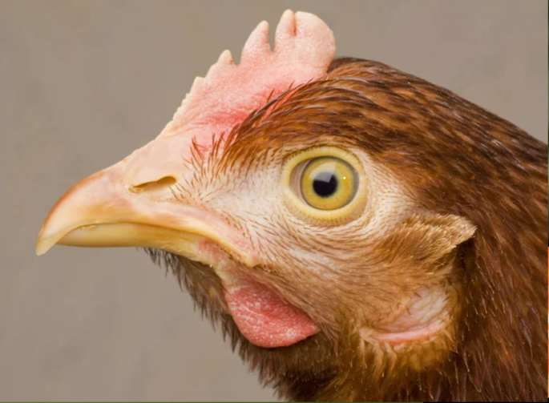
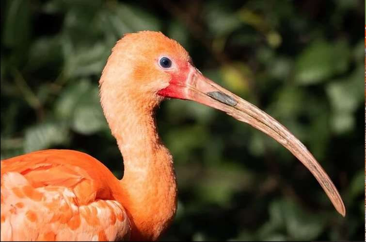
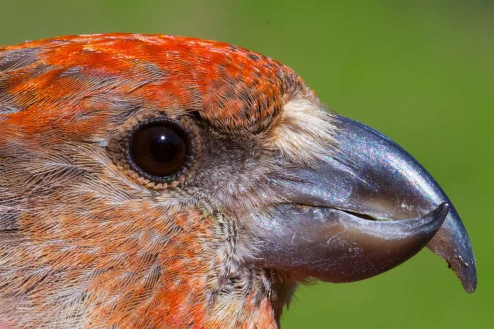
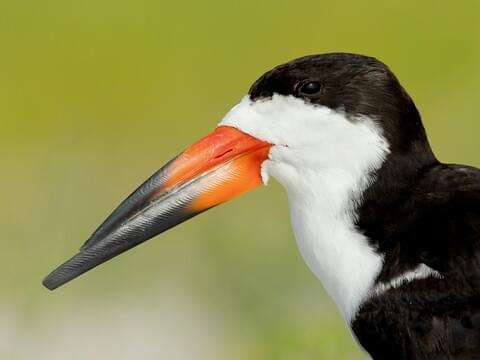
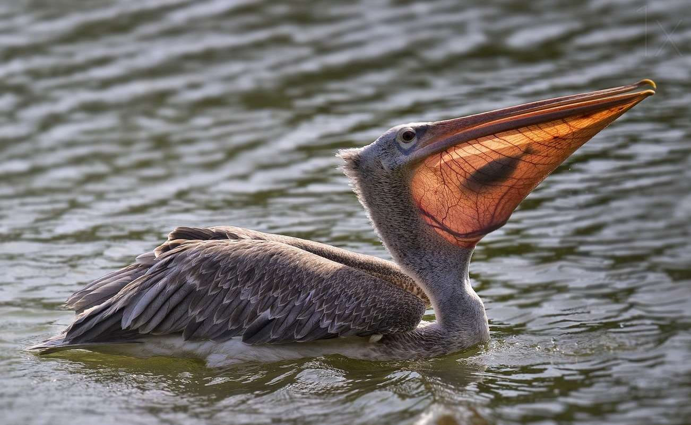
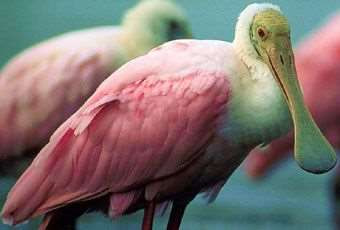
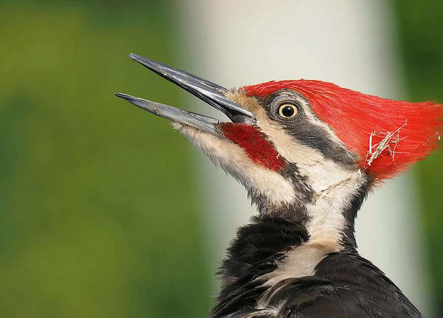
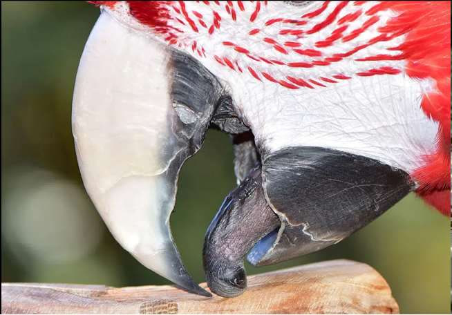
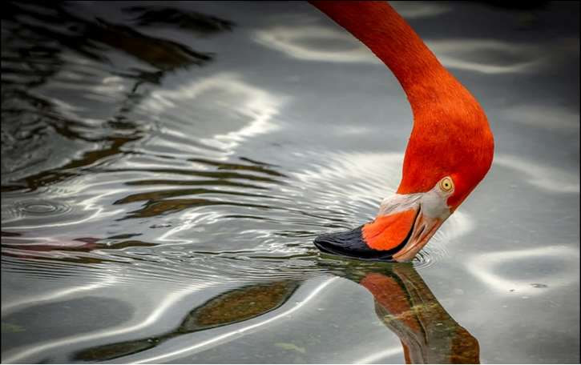
Cada especie de ave possui um bico cuja forma corresponde a sua finalidade: ciscar, pescar, filtrar, perfurar, quebrar sementes. A causa formal determina como tem de ser a materia, e a causa final determina como tem de ser a forma.
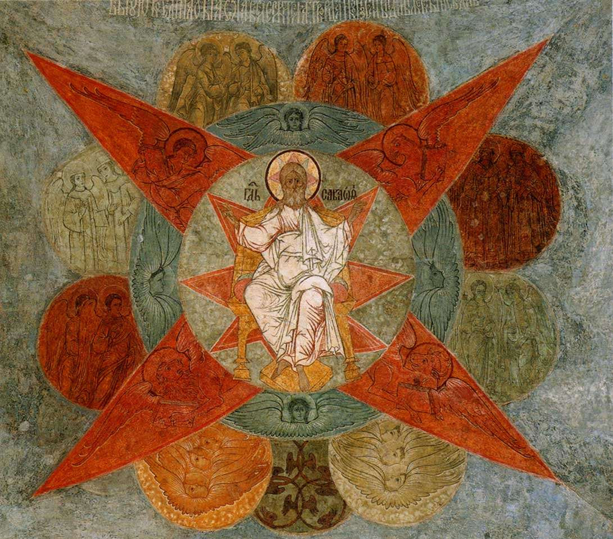
Toda a Criacao converge para o Pai, icone, ca. 1562-1666, Catedral do Arcanjo (Sao Miguel), Kremlin, Moscou. A Causa ultima do Universo, para a qual se dirigem todas as coisas por atracao.
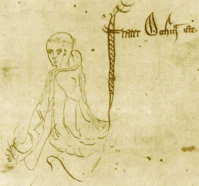
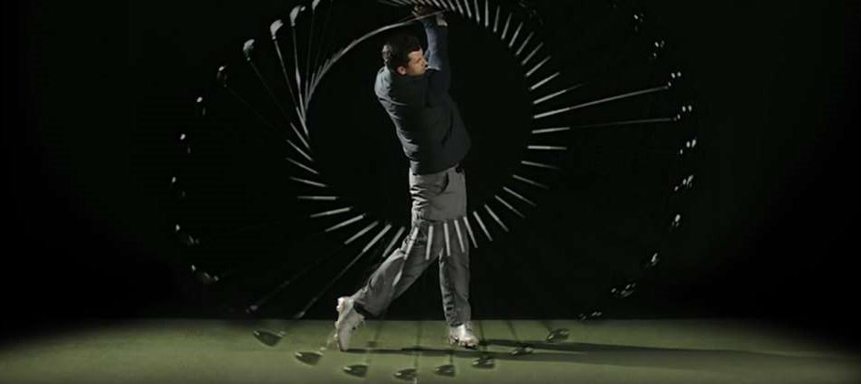
Guilherme de Ockham, 1341, esboce marginal em um manuscrito da Summa Logicae, MS Gonville and Caius College, 464571, fol. 69r, Cambridge.
Ockham (ca. 1287-1347), um dos pioneiros do nominalismo, seguindo o principio de parcimonia explicativa, argumentava que deveriamos dar prioridade as causas observaveis e imediatas, ao inves de invocar "causas finais hipoteticas".
A visao ocamista foi adotada nas Universidades do norte da Europa, levando ao completo abandono da nocao de causa final nas ciencias fisicas e biologicas, dominadas por uma visao mecanicista.
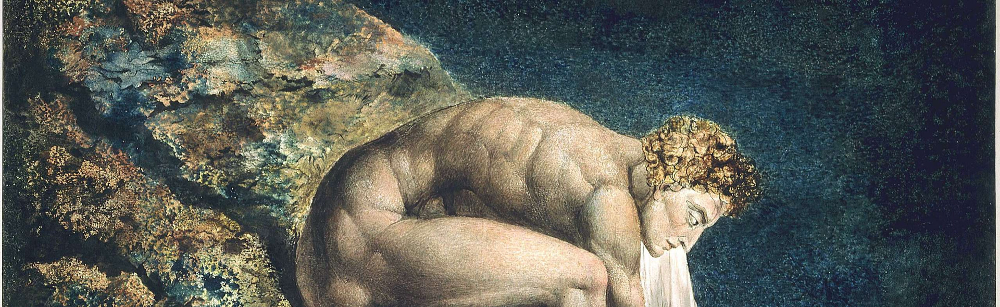
Newton, o "divino astronomo", por William Blake, ca. 1795, Tate Gallery Britain, Londres.
David Hume (1711-1776) levou ao extremo, afirmando que nenhum tipo de causalidade pode ser confirmado pelos sentidos, reduzindo-a a uma relacao entre ideias e sensacoes na mente, sem conexao alguma com o mundo fisico.
Kant contradiz Hume neste ponto, mas como considera que "as leis da natureza sao as leis do entendimento", essa controversia permanece sem solucao e sem influencia real.
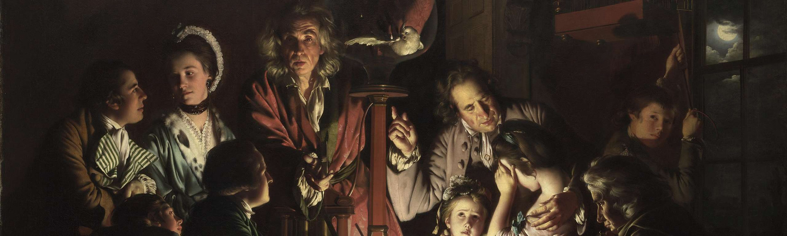
Experimento com uma ave em ar rarefeito por uma bomba de succao, de Joseph Wright of Derby, 1768, National Gallery, Londres.
A ciencia experimental moderna concentra-se exclusivamente na causa eficiente — a unica que pode ser verificada pelos sentidos e pela experiencia controlada.
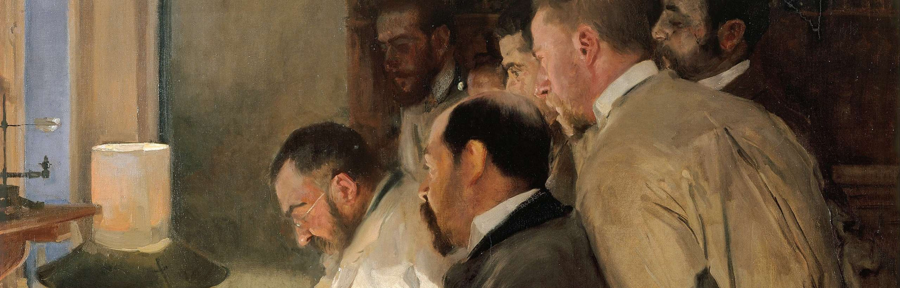
Uma investigacao, ou O Dr. Simarro no laboratorio, de Joaquin Sorolla y Bastida, 1897, Museu Sorolla, Madrid.
Alguns estudiosos passaram a considerar que so haveria finalidade se um ente desejasse ativamente um fim determinado, reduzindo a causa final a um conceito psicologico ou etico, e nao uma propriedade metafisica da realidade.
O astronomo Copernico, ou Conversa com Deus, de Jan Matejko, 1873, Museu da Universidade Jagieloniana, Cracovia. A busca pelas causas do movimento dos corpos celestes — a astronomia como ciencia da causa eficiente — mas sem perder de vista a causa final.
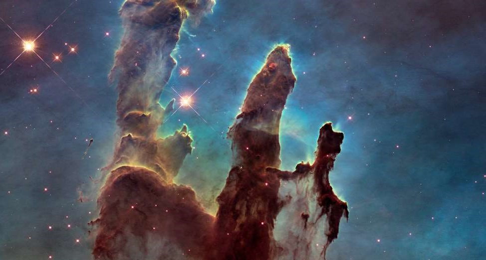
A pergunta "por que?" permanece no coracao de toda investigacao humana — das causas proximas a Causa ultima.